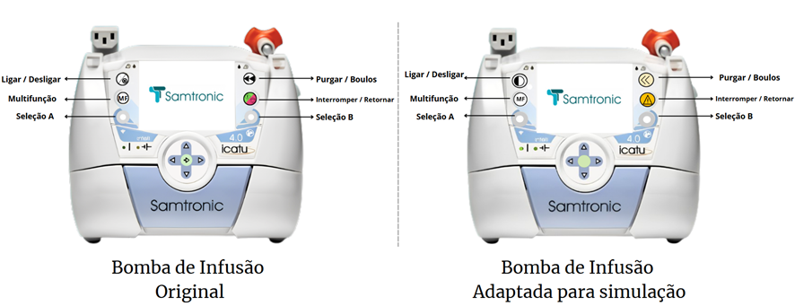

Seja bem-vindo(a) a página dedicada ao projeto aqui vamos apresentar como resolvemos problemas e o desafio proposto com código e hardware espero que gostem!
Projeto: Detecção de Erros e Reconhecimento de Tela em Sistemas de Saúde Utilizando Python Projeto De Tecnologia e Ciência Aplicada
Simulador e Validação do Sistema da Bomba de Infusão:
Esse simulador desempenha um papel crucial ao permitir testes do projeto em condições controladas que refletem os cenários de uso prático. Ele viabiliza uma análise abrangente do desempenho, precisão e confiabilidade do sistema, reduzindo a dependência de recursos externos e oferecendo uma abordagem mais acessível e eficiente para o avanço do projeto. Além disso, a criação do simulador evidencia a capacidade da equipe em se adaptar, permitindo que o projeto passe por um processo rigoroso de testes e aprimoramentos antes da sua aplicação em condições reais. Dessa forma, o simulador não apenas supre a ausência do equipamento físico, mas também agrega valor ao projeto como uma ferramenta essencial para o desenvolvimento e a validação do sistema. Para criar o simulador, foi ultilizado a plataforma Power Apps da Microsoft, que nos permitiu desenvolver uma interface interativa dedicada aos testes do projeto. A interface foi projetada com foco em replicar a operação básica da bomba de infusão, priorizando os elementos essenciais, como o display e os botões. A interface do simulador inclui uma imagem do dispositivo real, proporcionando uma experiência de interação visual que simula o acionamento dos botões. Embora a plataforma tenha limitações de design, conseguimos adaptar os botões para que preservassem suas funcionalidades originais, garantindo que as configurações e comportamentos simulados estivessem alinhados com as características reais da bomba.
Objetivo:
Desenvolvimento e solução do desafio:
PyAutoGui:
O PyAutoGui é uma biblioteca em Python e teve como função nesse projeto automatizar os processo que são feitos manualmente com a bomba de infusão por meio de fotos fizemos um robô que foi capaz de clicar na tela assim facilitando o treino da inteligência artificial. Abaixo temos um vídeo mostrando os primeiros testes que foram feitos com a biblioteca:
Teachable Machine:
A integração da ferramenta Teachable Machine ao projeto proporcionou um aprimoramento significativo nos processos de reconhecimento de imagens, tanto para fins educacionais quanto industriais. Para a coleta de dados, foram capturadas imagens de um simulador de bomba de infusão em diversas condições. As imagens foram colocadas manualmente e utilizadas para treinar um modelo de rede neural convolucional. O modelo foi capaz de classificar as imagens como 'corretas' ou 'erradas' com alta precisão, permitindo a detecção de erros em tempo real
Como foi feito o treinamento:
O treinamento foi feito da seguinte forma o robô treinado para executar as funções do simulador começa seu programa e com uma camera as imagens são enviadas para a inteligência artificial e podem ser classificadas como "correto" ou "errado" em cada classe, há um conjunto imagens de exemplo essas imagens servem como base para o treinamento do modelo. Épocas: O número de vezes que o modelo passa por todo o conjunto de dados durante o treinamento. Saída: A saída indica a probabilidade do modelo classificar uma imagem como "Correta" ou "Errada".
A Importância das Épocas e da Taxa de Aprendizagem no Treinamento de Modelos:
O número de épocas é um hiper parâmetro que pode ser ajustado durante o treinamento. É comum experimentar diferentes valores para encontrar o número ideal que maximiza o desempenho do modelo sem causar overfitting (é um termo da ciência de dados e do aprendizado de máquina que se refere a um modelo que se ajusta demais aos dados de treinamento, mas não consegue fazer previsões precisas com novos dados).
Taxa de Aprendizagem definida em 0.001: Assim como o número de épocas, a taxa de aprendizagem é um hiperparâmetro que pode ser ajustado. Um valor menor, como 0.001, indica que o modelo está fazendo atualizações mais graduais em seus pesos, o que pode ser útil para problemas mais complexos ou quando se deseja evitar overfitting.
Resultados apresentados:
Matriz de Confusão
Uma matriz de confusão é uma tabela que retorna valores de um e zero sendo um para verdadeiro e zero para falso, existem quatro possíveis resultados para essa matriz verdadeiro positivo (true positive — TP). Falso positivo (false positive — FP). Falso verdadeiro (true negative — TN). Falso negativo (false negative — FN)
Acurácia por Época
O gráfico mostra uma curva semelhante para os conjuntos de treinamento e teste, o que sugere que o modelo tem um comportamento consistente e pode generalizar relativamente bem para novos dados.
Perda por Época
O gráfico de perda por época mostra que a perda de treinamento diminui rapidamente nas primeiras épocas e se aproxima de zero, indicando que o modelo está aprendendo a ajustar os pesos para mapear os dados de entrada. A curva de perda de teste também diminui de forma consistente, estabilizando-se em um valor baixo após cerca de 20 épocas. Essa estabilização indica que o modelo está generalizando relativamente bem para dados novos.
Colaboradores: